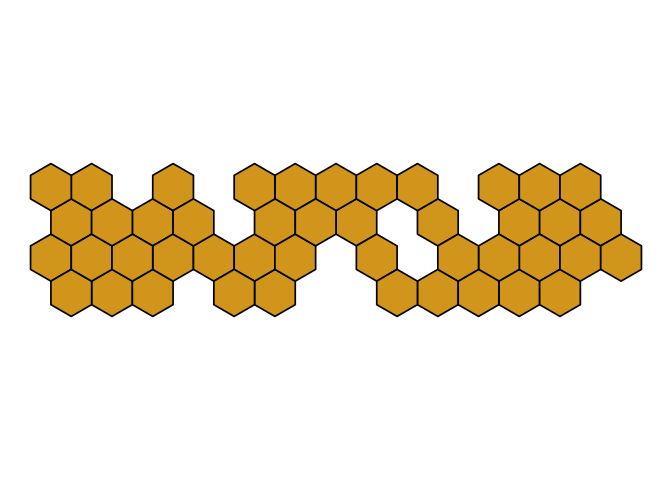

- Welcome and explanation
- CV
- Recent Talks
- Projects and Goals
- Packages
- unblogs: experiments and code demos
- Bio
‘Do not scatter your energies’,
These days I’m focused a lot on package building. I need a personal website update update. Instead of trying to reboot my blogdown website or convert to quarto, I’m just using package building architecture via pkgdown to create an updated personal webpage.
Recent Talks
A New Wave of ggplot2 Extenders, at ASA COWY chapter bit.ly/ggextend-cowy
ggcirclepack and beyond: experiments in the compute_panel space, at ggplot2 extenders, Spring 2023
Speaking ggplot2, April 2022, West Point Data Analytics Series
Elegant Statistical Narratives with ggxmean: MAA meeting, Poster Philidelphia, August, 2022
Extending ggplot2 statistical geometries, MAA Metro New York May 2021
{kind=link}
Projects and Goals
Supporting ‘a new wave of ggplot2 extenders’
There is a growing population of ggplot2 ‘super-users’ that – given their regular and long-term ggplot2 use – have a strong working knowledge of grammar of graphics principles and of ggplot2’s user interface. Among their ranks are statistics educators, data visualization professionals, and data scientists and statisticians.
The assertion of this project is that many ggplot2 super-users could find creating ggplot2 extensions very valuable, but that current educational materials are falling short in reaching and enabling many in this group. I’ll then discuss how new material could be tailored to this group and will introduce some such new points of entry.
easy geom recipes: diving into defining compute_group ggprotos
more geom recipes: cases when compute_group is not enough (compute_panel)
ggtedius workshop
Coordinating ggplot2 extenders meetup/support group
Supporting statistical learning
packages focus on intro stats
ma206data with maintained with statistics faculty West Point’s Math
Supporting new R package developers
- ggtedius workshop
- readme2pkg and readme as package story, tocs and enumeration of steps SeeEvaMaeRey/ggsmoothfit
- A companion guide to Jim Hester’s, ‘You can make an R package in 20 minutes’
`Books are meant to be read, … packages are not meant to be read and so I think it is kind’ - ‘R Packages: Q & A with Jenny Bryan’ around 3:00
Packages

codeexplode, codehover, doublecrochet, exampleexploder, formatR, ggbarlabs, ggbody, ggbrasil, ggcalendar, ggchile, ggcirclepack, ggdirect, ggdistrics, ggdistricts, ggextend, ggfips, ggjudge, ggmemory, ggnc, ggnorthcarolina, ggols, ggpivot, ggsample, ggsmoothfit, ggstamp, ggstates, ggverbatim, ggxmean, io, ma206data, ma206distributions, ma206equations, poeml, readme2pkg, tabylextra, tidybernoulli, tidypivot,
unblogs: experiments and code demos
- mytidytuesday lab book
- featurette
- ggpuzzles: space for untangling gg knots
- hexes Creating some hex stickers for packages
Bio
Hello and welcome! I’m a data scientist, software developer, and educator who is passionate about using visualization to facilitate communication about data and in statistical principles. I’m particularly motivated by the elegance and power of the “Grammar of Graphics” framework, and am exploring how to further empower ggplot2 users to take advantage of the extension space by 1) working on new extension packages for statistical education and 2) providing new points of entry into the ggplot2 world (tutorials/recipes as well as community building).
For the last three years, I’ve worked in the Dean’s Data Cell at the United States Military Academy at West Point in a data analytics and teaching dual role. I worked closely with stakeholders and other members of the data team to deliver actionable insights and meet institutional reporting requirements. I worked on the Deans Data Cell infrastructure towards code-first, reproducible and elegant data products that could be easily interpreted by a wide audience. I also taught sections of Introduction to Statistics and Probability (MA206) in the Mathematics Department, and oversaw five independent studies focused on tool-building for statistical education (Brown and McGovern in Fall AY2022, Brown in Spring AY2022, and Folorunso and Jax Spring AY2023).
From Fall AY2018-Spring AY2020, I taught statistical methodology at the University of Denver’s Korbel School of International Studies. During this period, I won an R Consortium, which allowed me to work with six graduate student researchers to advance that project (B., C., L., S., R. Ryan). I had previously lectured at the Technische Universität Dresden’s Center for International Studies on international organizations and statistical methodology (Spring AY2016 and Spring AY2018).
My PhD is from the University of Illinois, where my dissertation won Burkholder Award for Best Dissertation in the Political Science Department of the University of Illinois. I focus was on international institutions and law especially in the area of security. More broadly, my areas of study have been International Relations, Methodology, and Comparative Politics with an emphasis on Latin American Politics. My dissertation focused on compliance with supranational law, focusing on the UN Security Council resolutions as my principle case; I conducted dissertation field research in Brazil in the Federal House of Deputies.
During my PhD, I worked as a statistics consultant, at the Applied Technologies of the Arts and Science (ATLAS), at the University of Illinois from 2013-2015. I also served “Methods TA” in Political Science in the 2015-2016 academic year at the University of Illinois, providing assistance and expertise both to undergraduate and graduate students. At TU Dresden, in 2018, I designed and taught a course introducing students to data science tools and statistical analysis for political research.
I have been awarded the Fulbright Fellowship (Argentina 2008), Foreign Language and Area Studies Fellowships (2009-2011), Nelle Signor Travel Fellowship (Brazil 2011) and have participated in specialized workshops including the Empirical Implications of Theoretical Models (2010), Public Policy and Nuclear Threats (2013), the Berkeley Institute for Transparency in the Social Sciences (2015) workshops, the Zurich Summer School for Women in Political Methodology (2017), and the Lorentz Workshop: Empirical Research on International Organizations (2018).
Previously to my academic career, I worked at the U.S. Department of Commerce’s Bureau of Industry and Security in chemical and biological export controls and have worked in lithium-ion battery failure diagnostics at the Chemical Engineering Division of Argonne National Laboratory.